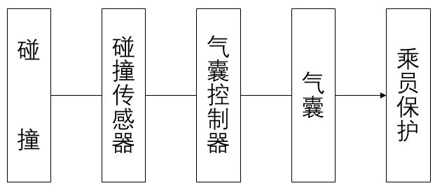

Автомобильная подушка безопасности по-английски называется AIRBAG, автомобильная подушка безопасности является вспомогательной системой безопасности (Supplemental Restraint System), сокращенно SRS.
Система подушек безопасности включает в себя датчики столкновения, контроллер подушек безопасности и различные подушки безопасности (включая подушку безопасности водителя, подушку безопасности переднего пассажира, боковые подушки безопасности водителя и переднего пассажира, левую и правую боковые шторки безопасности).
При столкновении датчики передают Сигнал столкновения на контроллер подушек безопасности; контроллер подушек безопасности на основе степени столкновения может определить, достигаются ли минимальные требования для срабатывания подушек безопасности, после чего выдает команду на подрыв, подрывая подушки безопасности, и быстро формирует заполненную газом мягкую подушку между пассажиром и элементами конструкции автомобиля (такими как Рулевое колесо, панель приборов, обивка и т. д.), смягчая удар и поглощая энергию столкновения за счет демпфирующего действия выпуска воздуха из подушки с целью снижения степени травмирования пассажиров.

Система подушек безопасности SRS может в полной мере реализовать свою функцию защиты пассажиров только при условии использования ремней безопасности.
Систему подушек безопасности следует проверять после каждого столкновения. Сработавшие после столкновения подушки безопасности и контроллер подушек безопасности повторному использованию не подлежат, их необходимо заменить! Новая система подушек безопасности должна быть проверена профессиональным техническим специалистом для подтверждения отсутствия дефектов и нормального функционирования.
Категорически запрещается устанавливать детские сиденья против хода движения на переднем сиденье, безопасным местом для детей является задний ряд.
Запрещается размещать или приклеивать какие-либо предметы в зонах установки подушек безопасности во избежание получения травм при срабатывании подушек безопасности.
Ремень безопасности является основным средством защиты пассажиров, ремнями безопасности оборудованы как передние, так и задние сиденья автомобиля. На передних и задних сиденьях используются трехточечные диагональные ремни безопасности.
Замки ремней безопасности переднего ряда установлены на направляющих соответствующих сидений. Замки ремней безопасности задних сидений закреплены на полу.
Ремни безопасности как переднего, так и заднего рядов оснащены функцией аварийной блокировки. Функция блокировки активируется при быстром вытягивании ремня безопасности из инерционной катушки. Функция блокировки предотвращает вытягивание ремня безопасности на величину, превышающую допустимое положение сматывания.
Ремни безопасности переднего ряда оснащены функцией напоминания о непристегнутом ремне, которая предупреждает пользователя о необходимости пристегнуть ремень безопасности с помощью визуальной и звуковой информации.